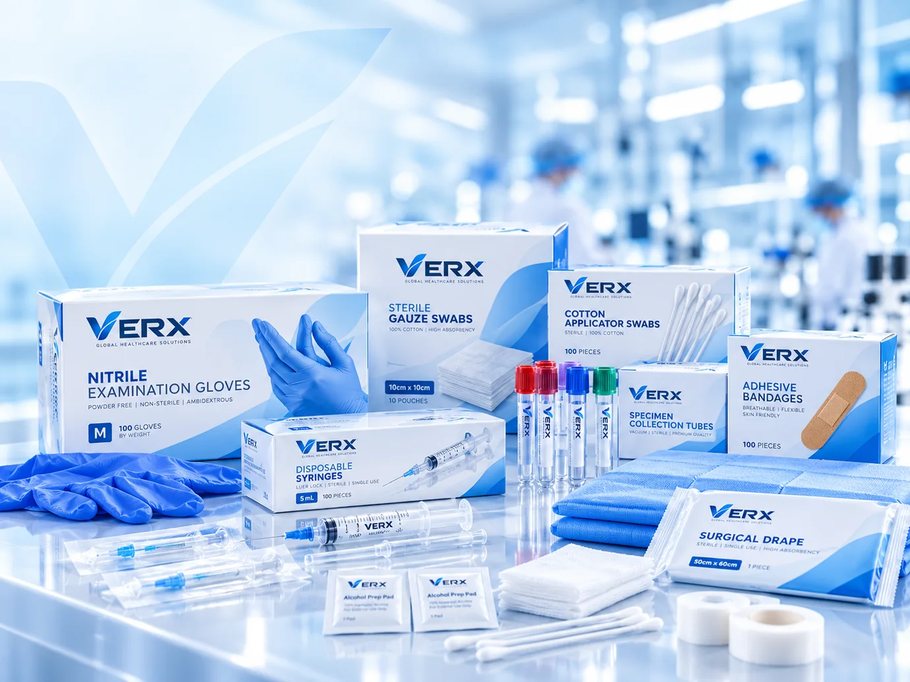
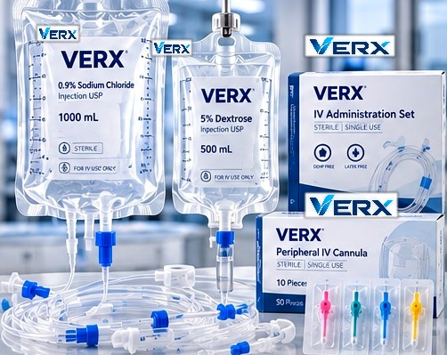
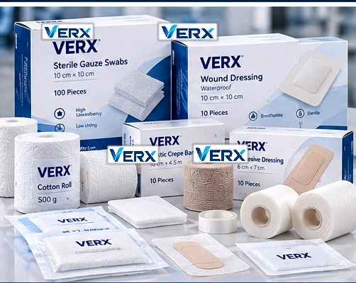

01 / 06
PRODUCT PORTFOLIOProducts for
Products for
every stage of care.
Explore our core categories and tell us what your organisation needs. Product specifications and availability are confirmed through enquiry.

EXPLORE THE RANGEClinical essentials.
Clinical essentials.
Carefully considered.
Browse six product families, or search for a category and request detailed information.
Find a category, review its scope, then request current product specifications and availability from our team.
6 categories
02 / 06

03 / 06

04 / 06

05 / 06
06 / 06
No categories match. You can contact our team about other product requirements.
Images illustrate product categories and do not establish VERX product availability, certification or specifications.
YOUR REQUIREMENTS COME FIRSTSpecific products?
Specific products?
Let’s discuss details.
For quotations or technical information, include the exact product type, preferred specifications, required quantity and destination market.
Request product informationREADY TO CONNECT?Let’s move healthcare
Let’s move healthcare
forward, together.
Tell us what your organisation needs. We’ll help you begin the right product and supply conversation.
Start an enquiryNo obligation to enquire